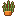
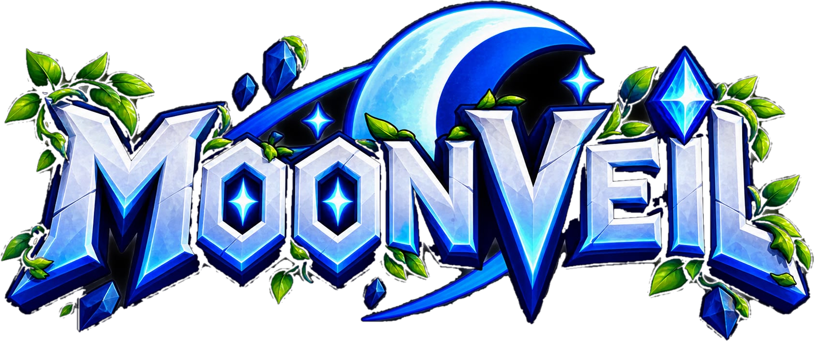
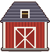
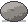

01 / CULTIVA
Haz crecer tu granja
Prepara la tierra, planta semillas y cuida tus cultivos. Las zanahorias crecen por fases y esperan a que vuelvas para cosecharlas.
MECÁNICA ACTUAL
MOONVEIL✦ El mundo de Moonveil ✦
Un proyecto independiente sobre encontrar tu lugar, cuidar lo que haces crecer y seguir el camino que despierta tu curiosidad.
Explorar el proyectoSobre el proyecto
Moonveil es un videojuego en desarrollo creado por el equipo Yellow Stone. Su punto de partida es la libertad de los juegos de vida rural: poder marcar tu propio ritmo y encontrar algo especial en las pequeñas tareas de cada día.
La idea combina el cuidado de una granja con la exploración de nuevos lugares. Puedes cultivar, preparar herramientas, reunir recursos y aventurarte hacia zonas como la mina. El proyecto sigue creciendo y cada sistema nuevo amplía las posibilidades de ese mundo.

Nuestra visión
Queremos que Moonveil sea un lugar al que apetezca volver: acogedor para quedarse, interesante para explorar y abierto a nuevas historias. El prototipo ya reúne actividades de granja, herramientas, inventario y exploración; seguimos construyendo sobre esa base.
Características del juego
Estas son algunas de las mecánicas que forman parte del prototipo actual.

Prepara la tierra, planta semillas y cuida tus cultivos. Las zanahorias crecen por fases y esperan a que vuelvas para cosecharlas.
MECÁNICA ACTUAL
Rompe rocas, encuentra minerales y busca la escalera que lleva al siguiente nivel.
MECÁNICA ACTUALUsa regadera, pico, hacha y semillas para interactuar con el entorno y conseguir materiales.
MECÁNICA ACTUALAcércate al vendedor e intercambia recursos disponibles en tu mochila.
MECÁNICA ACTUALPersonalización, construcción y nuevas aventuras son caminos que pueden ampliar el proyecto. Todavía no forman parte del prototipo actual.
POSIBILIDADES FUTURASInspiración y universo
Moonveil toma como referencia Stardew Valley y el espíritu de los juegos sandbox, RPG y de aventura: mundos que invitan a explorar, sistemas que se entrelazan y espacio para jugar a tu manera.
El ritmo cercano y la libertad que nos inspira Stardew Valley.
La curiosidad por descubrir qué hay tras el siguiente camino.
Una identidad nocturna y luminosa que da personalidad a Moonveil.
Colaboradores y equipo
Yellow Stone es el equipo detrás de Moonveil. Los roles específicos y las biografías individuales se añadirán cuando estén definidos.

EQUIPO DE DESARROLLO
Integrante de Yellow Stone. Su rol y presentación individual se publicarán próximamente.
EQUIPO DE DESARROLLO
Integrante de Yellow Stone. Su rol y presentación individual se publicarán próximamente.
EQUIPO DE DESARROLLO
Integrante de Yellow Stone. Su rol y presentación individual se publicarán próximamente.
EQUIPO DE DESARROLLO
Integrante de Yellow Stone. Su rol y presentación individual se publicarán próximamente.
El viaje continúa
Moonveil sigue en desarrollo. Las próximas novedades y canales de comunidad se anunciarán aquí cuando estén disponibles.
NOVEDADES PRÓXIMAMENTE